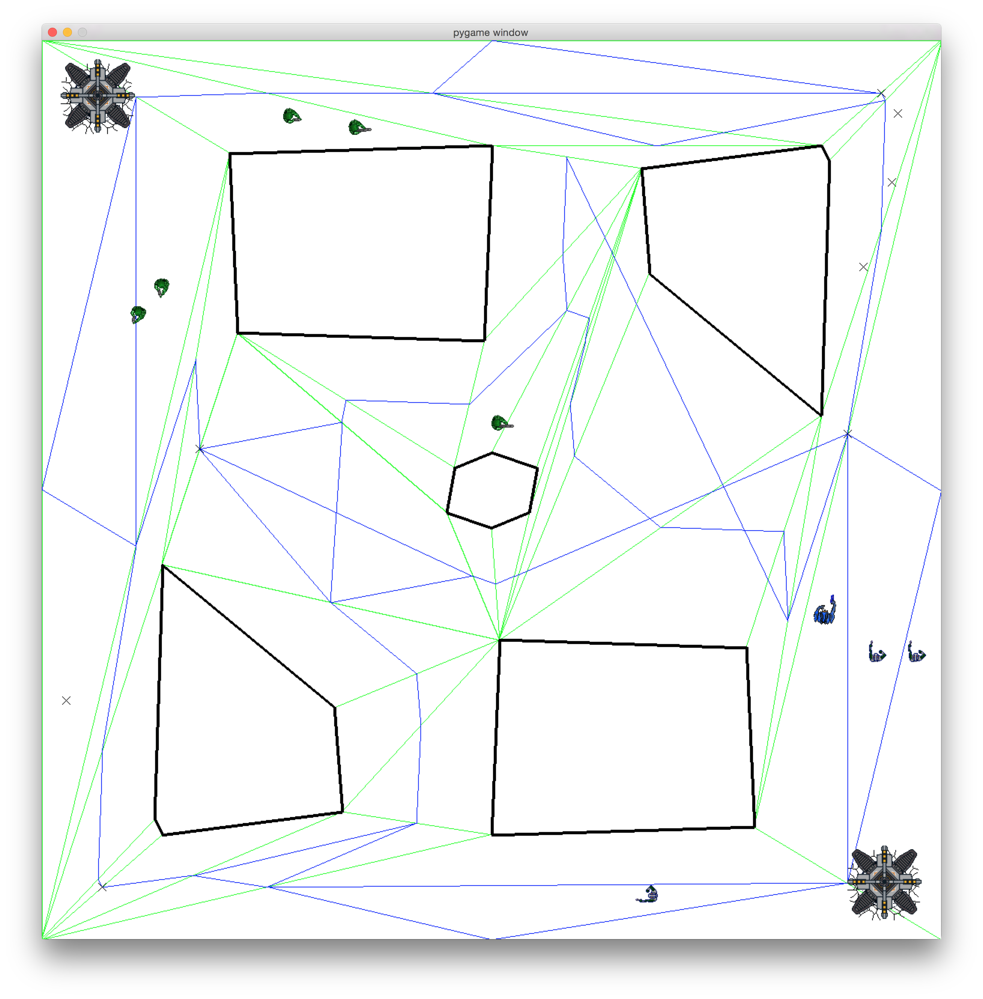
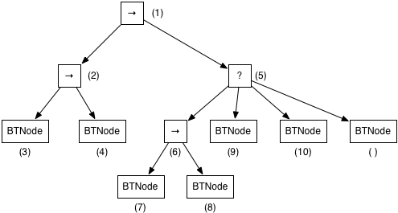

A Multiplayer Online Battle Arena (MOBA) is a form of Real-Time Strategy game in which the player controls a powerful agent called the "Hero" in a world populated with simple, weak, fully computer-controlled agents called "Minions." In this assignment, we will implement the decision-making for Hero agents.
A MOBA has two teams. Each team has a base, which is protected by a number of towers. The goal is to destroy the opponent's base. In MOBAs, bases periodically spawn Minion agents, who automatically attack the enemy towers and bases. Towers and bases can defend themselves; they target Minions before targeting Heroes. Thus Minions provide cover for Heroes, who are much more powerful.
In this version of a MOBA, Heroes have a number of special properties that make them more powerful than Minions:
In this assignment, you will implement the AI for a Hero agent in a world similar to a MOBA. However, we will substantially change the rules so we can focus on Hero AI without all the complications of a MOBA. In this game, there are no towers and each team has a maximum of three minions at any given time. The minions wander aimlessly, but shoot at Heroes if they ever get too close. Heroes must hunt each other, and the game is scored by how much damage one Hero does to another Hero.
We will build off your previous navigation mesh and path network generation solution from homework 3 and your previous A* implementation from homework 4.
Hero decision-making can be anything, but in a MOBA, typically the Hero focuses on gaining extra powers so it can take out enemy Minions at a faster rate. Eventually, a Hero will be powerful enough to quickly take down towers and bases. Since towers and bases target Minions before targeting Heroes, it is beneficial for Heroes to protect friendly Minions and use them for cover. By targeting enemy Minions, a Hero can make it harder for the enemy Hero to take cover. Heroes may engage each other from time to time to disrupt opponent advantage.
However, in this assignment, we will only focus on the Hero vs. Hero aspects of a MOBA. You will implement a Behavior Tree for Hero agents. You will be provided with a special class for Heroes that knows how to execute a behavior tree. In this assignment, you will write the control logic for behavior trees and complete the code for a number of Hero behaviors.
In Hero vs. Hero combat the best solution is to focus on strategy. Heroes have many properties (listed above) that make for interesting trade-offs when deciding what behavior to execute. Examples of strategic decisions include: hunting the enemy Hero, hunting Minions to increase level, using a longer-ranged shooting attack versus a limited-range area effect attack, retreating to the base to heal, hiding from the enemy Hero, hiding from Minions, etc.
The bases will automatically spawn Minion agents, up to a maximum of three. If a Hero dies, it will immediately respawn at the base, but the level will be reset.
Both teams will use the same Minion agent AI, which wanders the map to random places. Minions will shoot at Heroes if they are within firing range.
The game score is computed as the cumulative amount of damage one Hero has done to the other Hero. You must implement Hero AI that can result in a higher score than the opponent.
A behavior tree is a hierarchically-arranged description of all possible plans of action that an agent can consider, and the conditions under which those plans can be selected or rejected. Behavior trees represent a middle ground between finite state machines, in which all behavior is specified by a designer, and formal planning, in which all decisions are autonomously made. A behavior tree allows designers to specify which plans can be generated and allow the agent to make the final decision on which plan to execute. Since enumerating all possible plans an agent can take may be intractable, behavior trees allow plans to be broken up into sub-plans that are reused in a hierarchical fashion.
Behavior trees are made up of different types of nodes. Internal nodes represent behavior flow control, specifying how to combine sub-trees into plans. Leaf nodes are tasks, specifying behaviors an agent should execute in the world. Tasks also specify the conditions under which tasks can and cannot be performed. The behavior tree acts as a pseudo-mathematical definition of the agent's brain, with tasks performing call-backs to the agent body to act in the world and affect the world state.
Consider the behavior tree below:
At every tick, the agent calls the execute() function on the root of the tree. Each type of node has a different logic for execution. The nodes labeled with question marks are Selector nodes. A Selector node tries to execute each child until one indicates that it can be executed. Thus the behavior tree above first tries to retreat. If it is not appropriate to retreat, it tries something else. The nodes labeled with arrows are Sequence nodes. A Sequence node tries to execute each child in turn until all children have reported that they have executed successfully.
Thus, the logic represented by the above behavior tree is as follows. The agent tries to retreat, returning to the base for healing. If it is not appropriate for the agent to retreat—it has not lost enough health—it then tries to chase the hero and then kill the hero. If that sequence fails for any reason, the agent tries to chase a minion and then kill the minion.
The circles in the diagram are a special type of node called a Daemon. A Daemon checks a condition in the world and decides whether to execute its child or return instant failure. For example, the top-most Daemon might check whether the health of the agent is greater than 50%. Thus, the agent can only chase heroes and minions if it has enough health. The lower Daemon might check whether the agent is more powerful than the enemy Hero. Thus, the agent can only execute the sequence of chasing and killing the enemy Hero if it is strong enough to do so. Daemons short-circuit the tree, allowing a decision to recurse to be made quickly. They also allow the tree to quickly stop executing on a sub-tree if certain conditions become false.
An agent that implements a behavior tree calls the execute() function of the root node every tick. The purpose of internal nodes (Selectors, Sequences, and Daemons) is to figure out which leaf node (task) should have its execute() function called that tick. Thus think of a behavior tree as a cascade in which control flows from the root to exactly one leaf node. The execute() function of the leaf node is called and any appropriate action taken.
Nodes can return one of three values: success (True), failure (False), or running (None). Success means that the behavior has run to completion and has achieved what it is supposed to achieve. For example, a successful retreat means having the agent's health restored to 100%. Failure means that either the behavior is not applicable in the current world state or that it is no longer able to achieve the success conditions and should terminate. In a non-turn-based game world, some behaviors require many ticks to complete successfully (or to fail). For example, retreating requires navigating back to the home base, which may take many ticks. The running (None) return value means that the node requires more time to determine whether it has succeeded or failed.
Logic for a Selector node:
The execute() function of a Selector node must decide which child should execute. It tries to execute each child in order until one does not return failure. However, only one child can have its execute() function called. Therefore, a Selector remembers which child should be tried on the current tick.
Logic for a Sequence node:
The execute() function of a Sequence node must decide which child should execute. It tries to execute each child in order until one returns a failure. However, only one child can have its execute() function called. Therefore, a Sequence remembers which child should be tried on the current tick.
Leaf nodes:
The execute() functions of a leaf node must do three things. First, it must check applicability conditions and return failure immediately if the behavior is not applicable to run at this time. Second, it must call back to the agent to perform any appropriate actions. Whatever the leaf node does, it should not require a lot of computation because execute() is called every tick. Third, it must determine whether the behavior has succeeded. If the behavior is applicable but has not succeeded, it should indicate that it is still running by returning None.
The first time a leaf node executes, an additional enter() function will be called to do any one-time set up for execution. Enter() will only be called once per leaf node. However, if the tree is ever reset, then each leaf node will have its enter() function called again the next time the node is visited.
Daemon nodes:
The execute() function of a Daemon node checks the applicability of an entire sub-tree (as opposed to a single behavior). The execute() function checks the applicability conditions and returns False if the conditions are not met. If the conditions are met, the execute() function of its single child is called and the Daemon returns the child's return value as if it were its own. Daemons assume a single child.
In this assignment, you will implement the logic for Selector and Sequence nodes. You will be given the opportunity to test your implementations before working of Hero agents. You will then be asked to implement the execute() functions for a number of different types of behaviors for MOBA Heroes. We will provide you with several different tree configurations to test your Hero agent with.
Please consult previous homework instructions for background on the Game Engine. In addition to the information about the game engine provided there, the following are new elements you need to know about.
Three things are newly relevant to this assignment. (1) Agents have hitpoints. (2) Agents can be part of a team. (3) Agents can shoot in the direction they are facing.
Member variables:
Member functions:
Note: To effectively shoot at something, first turn the agent to face the target (or to the point the agent wishes to fire at) with turnToFace() and then call shoot().
BehaviorTree is defined in behaviortree.py. A BehaviorTree is a container class that maintains a pointer to the root node (BTNode) of the behavior tree. At every tick, the BehaviorTree will call the execute() function on the root node.
When the root node of the behavior tree returns success or failure, then the tree is reset for another run next tick.
A BehaviorTree object also knows how to build a complete tree from a specification. When the tree is built, each node is instantiated as an object in memory with pointers to its children, but no nodes are actually executed at that time. Once the tree has been built, it is ready for execution during the gameplay loop.
Member variables:
Member functions:
The buildTree() function takes in a specification that tells the BehaviorTree the type of each node in the tree, the child/parent relationships between each node, and any parameters that can be known at build time. The build specification language is a sub-set of the Python language and is as follows:
For example: [(Sequence, 1), [(Sequence, 2), (BTNode, 3), (BTNode, 4)], [(Selector, 5), [(Sequence, 6), (BTNode, 7), (BTNode, 8)], (BTNode, 9), (BTNode, 10), BTNode]] creates the following behavior tree. In this example, we are assuming that the second element in a Tuple is an identification parameter for the node. Note that one node does not have any parameters.
BTNode is defined in behaviortree.py. a BTNode is a parent class for nodes in a behavior tree. BTNode assumes that a node has children, but leaf nodes do not use the children. The primary functionality of a BTNode is it's execute() function, which will be called in the course of a tick. The first time a BTNode is visited in the course of execution, the enter() function is also called. BTNode assumes a node has children, but that is not necessarily the case for behavior types, which will always be leaf nodes. If a BTNode is an internal node, it keeps track of its current child with an index number.
Member variables:
Member functions:
For execute() to control the agent, it must make call-backs via the agent member variables. This is node in leaf nodes. For example, if the behavior of a state is to make the agent shoot, the execute() function can call self.agent.shoot().
The execute() function for internal nodes should determine which single child should have its execute() function called. The execute() function for leaf nodes should implement the intended behavior, making call-backs to the agent.
The constructor for the base BTNode class takes a number of arguments, as a list. But it doesn't know what they are meant to be. Constructors for sub-classes can look at the arguments passed in through args and pick out the relevant information and store it or compute with it. For example, TestNode takes the first element in the list and sets the ID.
For example, one might want a Taunt behavior, and the tree will be built to always taunt a particular enemy agent. The tree build specification could be [Sequence, (Taunt, enemyhero), [Selector, Retreat, [Sequence, ChaseHero, KillHero]]] where enemyagent is a pre-computed reference to the enemy hero. Even though the Taunt sub-class is expecting an argument, it will just be passed in to the constructor as args[0]. Use parseArgs(args) to capture the parameter and use it. For example:
In the sample above, when the behavior tree is built from the given specification, the Taunt object will be created and the reference to enemyhero will be passed in as args[0] and self.target will be set to enemyhero.
A VisionAgent is a sub-class of StateAgent. VisionAgent is given a viewangle, a number of degrees that the agent can see. Every tick, the VisionAgent asks the GameWorld what it can see, based on its view angle, and maintains a list of visible Movers (agents, bullets, towers, and bases). For this assignment, Minions have a view angle of 360 degrees, meaning they can see everything around them irrespective of what direction they are facing.
Member variables:
Member functions:
A sub-class of VisionAgent, specialized for the MOBA. MOBAAgents do two noteworthy things. First, MOBAAgents die whenever they collide with an Obstacle. Second, they can compute a list of points in navigable space in the even that the agent needs to choose a point to move to without worrying about whether that point is inside an Obstacle (the agent will still have to figure out if it can actually move there).
Additionally, new to this homework, MOBAAgents keep track of the agent that last did damage to them, and have a level, which is used to compute maximum hitpoints and amount of damage they can do.
Member variables:
Member functions:
Abstract base class, which is a sub-type of MOBAAgent.
In this assignment, the Hero can dodge, use an area effect attack, be healed by bases, and level-up whenever it kills another agent of any type.
Member variables:
Member functions:
MyHero is defined in MyHero.py. MyHero is a specialization of a Hero and also has BehaviorTree as a base class. Every tick, when MyHero.update() is called, the BehaviorTree.update() is also called.
When the agent is created (at the beginning of the game, or after it dies and respawns), it builds a behavior tree. The function treeSpec(), is a custom function that provides the specification for the behavior tree.
A special Bullet class for the MOBA. MOBABullets differ from regular bullets in that they are range-limited.
There are four sub-classes of MOBABullet: SmallBullet, BigBullet, BaseBullet, and TowerBullet. These bullets are specific to Minions, Heroes, Bases, and Towers, respectively and do different amounts of damage.
Each team in a MOBA has a Base. Bases spawn minions at regular intervals as long as the maximum number of minions allowed at any given time has not been reached. Bases cannot be damaged as long as there are towers present on the same team. Bases can heal Heroes—if a Hero touches a base, its hitpoints are restored to maximum value.
Member variables:
Member functions:
A special type of GameWorld for MOBAs. MOBAWorld is a type of GatedWorld. The MOBAWorld keeps track of bases and towers, in addition to NPCs, Bullets, and the agent.
New to this assignment: the MOBAWorld keeps track of the score for each team.
Member variables:
Member functions:
This assignment includes a number of BTNode subclasses. Some are complete and can be used for testing. Some require completion.
Selector: Selectors determine which of its children should be executed.
Sequence: Sequences try to execute all of their children.
TestNode: TestNode sets its ID to the first argument provided upon instantiation. TestNode immediately terminates execution with success if the ID is an even integer and failure otherwise.
DelayTestNode: DelayTestNode operates like a TestNode, but it waits for a given number of ticks to pass before reporting success or failure. The amount of time (number of ticks) required to "execute" a DelayTestNode is given by the second argument provided upon instantiation. For example, a build tree specification that includes (DelayTestNode, 1, 10) will create a DelayTestNode with and id of 1 and will require 10 calls to execute before it returns success or failure.
Taunt: Taunt is instantiated with a reference to an enemy agent. At every execution call, Taunt will print a disparaging message, referencing the targetted agent. The reference to the enemy agent is the first argument given at tree instantiation.
MoveToTarget: MoveToTarget must be provided an ID as the first argument and an (x, y) point as a second argument. MoveToTarget instructs the agent to navigate to the specified point and returns success when it is within one agent radius of the point.
Retreat: Instructs the agent to return to its team's base to be healed. Retreat is only applicable if the agent has lost more than half of its hitpoints. The behavior succeeds when the hitpoints have been restored to their maximum amount.
ChaseMinion: Instructs the agent to move withing firing range of a minion. The behavior reports failure if the targeted minion dies prematurely. It reports success when the agent is within firing range of the minion.
KillMinion: Instructs the agent to continuously shoot at a minion. Reports failure if the minion moves out of firing range or behind an obstacle. Reports success if the minion dies.
ChaseHero: Instructs the agent to move withing firing range of an enemy hero. The behavior reports failure if the targeted hero dies prematurely. It reports success when the agent is within firing range of the hero.
KillHero: Instructs the agent to continuously shoot at a hero. Reports failure if the hero moves out of firing range or behind an obstacle. Reports success if the hero dies.
HitpointDaemon: Reports failure if agent hitpoints fall below a given percentage.
BuffDaemon: Reports failure if the agent's level is close to the enemy hero's level. A required distance is given. For example, a BuffDaemon may be configured to require the agent to have a level that is greater than 2 levels above the enemy hero's level.
To complete this assignment, you must implement the logic for Selector and Sequence node types. You must additionally complete the execution logic for a number of behavior tree node types specific to hero vs. hero combat.
Use your solution to homework 3 to generate a navigation mesh and a corresponding path network. The instructor can provide you with a default solution if necessary. You may also wish to use any path smoothing operations from homework 4. Use your A* implementation from homework 4. The instructor can provide you with a default solution in necessary.
The following steps are required to complete the assignment.
Step 1: Copy your myCreatePathNetwork function from homework 3. Copy your astarnavigator.py from homework 4. Copy mynavigatorhelpers.py functions from homework 4.
Step 2: Implement the execution logic for Sequence and Selector node types. Modify Sequence.execute() and Selector.execute() in btnode.py. See the explanation of Sequence and Selector nodes above for success conditions and failure conditions.
Test your implementations using test.py:
> python runtest.py
test.py uses TestNode and DelayTest and does not invoke the entire game engine.
Step 3: Create a behavior tree specification to control a MyHero agent. The goal of the behavior tree is to guide the MyHero so as to be the first to do 100 points of damage against the enemy hero. In mybehaviors.py, modify treeSpec() so that it returns the behavior tree specification to be used by MyHero OR modify myBuildTree() to manually build the tree and return the root of the tree.
A number of leaf node behavior and daemon class types have been provided for you to use:
| Class name | Description | Example specifications |
|---|---|---|
| Taunt | Print disparaging comment, addressed to a given NPC. Takes two parameters: (1) a reference to an NPC, and (2) optional node ID string. | (Taunt, agentref) (Taunt, agentref, "id") |
| MoveToTarget | Move the agent to a given (x, y). Takes two parameters: (1) an (x, y) point, and (2) optional node ID string. | (MoveToTarget, (x, y)) |
| Retreat | Move the agent back to the base to be healed. Takes two parameters: (1) the percentage of total hitpoints that need to be lost before retreating, and (2) optional node ID string. | Retreat (Retreat, 0.5) (Retreat, 0.75, "id") |
| ChaseMinion | Find the closest minion and move to intercept it. Takes a single parameter: optional node ID string. | ChaseMinion (ChaseMinion, "id") |
| KillMinion | Kill the closest minion. Assumes it is already in range. Takes a single parameter: optional node ID string. | KillMinion (KillMinion, "id") |
| ChaseHero | Move to intercept the enemy Hero. Takes a single parameter: optional node ID string. | ChaseHero (ChaseHero, "id") |
| KillHero | Kill the enemy hero. Assumes it is already in range. Takes a single parameter: optional node ID string. | KillHero (KillHero, "id") |
| HitpointDaemon | Only execute children if hitpoints are above a certain percentage. Takes two parameters: (1) the percentage of total hitpoints that need to be remaining to trigger a condition success, and (2) optional node ID string. | HitpointDaemon (HitpointDaemon, 0.5) |
| BuffDaemon | Only execute children if agent's level is significantly above enemy hero's level. Takes two parameters: (1) the number of levels greater than the enemy hero's level necessary to not fail the condition check, and (2) optional node ID string. | BuffDaemon (BuffDaemon, 2) (BuffDaemon, 3, "id") |
You may also write your own behaviors or subclass existing behaviors.
(Note: If you choose to modify myBuildTree(), you may find it advantageous to use the makeNode() helper function. makeNode() has two required arguments: (1) a class name, which should be BTNode or a sub-class of BTNode, and (2) a reference to the agent to be controlled. makeNode() can take an arbitrary number of additional arguments, which will be passed into the newly created BTNode and parsed using BTNode.parseArgs(). For example, makeNode(Taunt, agent, "Fred", "id1") will create a Taunt tree node for the agent, set the target of the taunt to "Fred", and set the node's ID to "id1".)
To test your implementations, use runherocompetition.py to run a MyHero agent using your behavior tree nodes against different Hero types:
> python runherocompetition.py MyHero MyHero
> python runherocompetition.py MyHero BaselineHero
> python runherocompetition.py BaselineHero BaselineHero
> python runherocompetition.py MyHero BaselineHero2
> python runherocompetition.py MyHero BaselineHero3
BaselineHero is a bare-bones implementation of Hero AI that you can use to test against. BaselineHero agents simply navigate to the nearest Hero and starts shooting. BaselineHero2 will return to the base for healing if it takes too much damage. BaselineHero3 uses a more sophisticated strategy that will not be revealed.
Grading occurs in two stages.
Stage 1 (5 points): Grading of your implementation of Selector.execute() and Sequence.execute() will be done by performing a suite of tests similar to that in runtest.py and comparing execution orders.
Stage 2 (5 points): Grading of your behavior tree specification will be performed by running complete games in which your agent faces off against baseline agents. These games have a score. Each team receives one point for every point of damage done by a Hero agent to another Hero agent. Your MyHero agent will be tested against three baseline agents (described above).
For pragmatic reasons, games will be limited to 5000 ticks. As a rule of thumb, this should be less than 5 minutes on most computers.
To test your Sequence and Selector implementations, change the ID numbers of TestNodes in runtest.py to different even and odd numbers. You may also want to change TestNodes to DelayTestNodes.
The player-controlled character is a GhostAgent, which can move through walls without being obstructed. Baseline Heroes and Minions will not target GhostAgents. If you change the player-controlled character to a Hero in runhero.py or runherocompetition.py, then you will be able to dodge by pressing 'j' (for jump), and use the area effect attack by pressing 'a'.
Implement custom behaviors to perform more sophisticated tactics. If you do so, you may want to consider the following tips:
To submit your solution, upload your modified btnode.py, mybehaviors.py, mycreatepathnetwork.py, mynavigatorhelpers.py, and astarnavigator.py.
You should not modify any other files in the game engine.
DO NOT upload the entire game engine.
{kind=link}